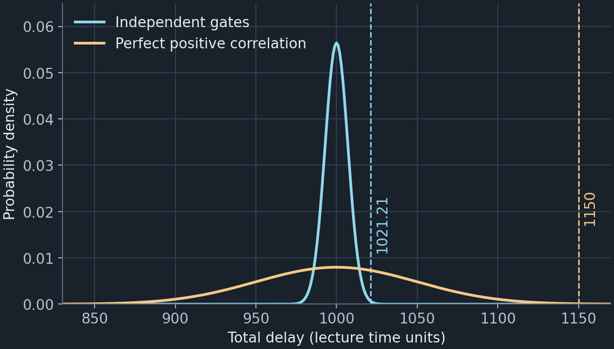

10. On-chip variation, coupling, and statistical timing
The execution slice has a small positive nominal setup margin. Its launch clock, arithmetic path, clock capture branch, and neighboring routes each alter that margin. A timing model must state which effects move together and which worst-case combinations are physically possible.
Derate paths for on-chip variation L31 08:31 · L31 16:02
Process, voltage, and temperature corners can model global shifts. On-chip variation (OCV) accounts for delays that differ across components of one die. A simple deterministic treatment applies early and late factors to selected clock and data delays. For a setup check, an early capture branch and late launch/data path reduce the available margin. Hold uses a late capture branch and an early launch/data path in the corresponding worst-case construction. Uniform factors are simple to audit. They can treat unlikely combinations as if they co-occurred and can discard differences in path depth and physical separation.
For an illustrative setup budget, use a 1000 ps period, nominal launch/capture insertion of 80 ps each, 900 ps of maximum clock-to-output plus data delay, and 50 ps of setup plus uncertainty. Nominal slack is 50 ps. Apply a late factor of 1.05 to both launch latency and the 900 ps contribution and an early factor of 0.95 to capture latency. Arrival becomes \(84+945=1029\) ps. Required time becomes \(1000+76-50=1026\) ps. The scenario gives −3 ps slack. If launch and capture share the entire 80 ps of clock delay and the analysis conditions justify removing the contradictory early/late treatment there, recovering the 8 ps difference gives +5 ps. A real timer may use different derates for cells and nets and for different transitions. Always check the report's breakdown of any correction.
The annotated setup diagram shows a 1.2 ns common segment before the split. The paths after the split are 0.80 ns to launch and 0.86 ns to capture. With 5.2 ns maximum data delay including clock-to-output, 0.35 ns setup, and no uncertainty, the minimum nominal period is \(2.00+5.20+0.35-2.06=5.49\) ns. The common segment cancels at nominal because its delay appears with opposite signs. Applying different early and late delays to it creates the apparent difference that common-path correction addresses. L31 28:15 · L31 30:39
Advanced OCV can select derates by path depth and distance. Depth can matter because independent local variation partially averages along long paths. Distance can matter because spatially nearby devices can share systematic variation. Parametric approaches use characterized variation data and propagate quantities such as mean shift and spread. Their guarantees depend on the tool model, the library data and the scenario. Visweswariah et al., First-Order Incremental Block-Based Statistical Timing Analysis
Choose signoff scenarios by combining functional or test modes, cell operating corners, and routed interconnect corners. Slow-cell delay and wire-capacitance effects can dominate different paths. An implementation can therefore need multiple setup and hold scenarios even at one clock frequency. A graph-based timer summarizes arrivals and slews at shared pins. Suppose incoming path A is later and path B has a worse slew. Propagating A's arrival together with B's slew can produce a conservative downstream estimate when that pair belongs to neither physical path. Path-based recalculation tracks the selected path's own timing and slew. It costs more per examined path, and a candidate omitted from the path set has yet to be evaluated by that recalculation. L31 48:03 · L31 52:04
For hold, reverse the early and late assignments of the clock and data branches in the setup example. The worst hold case combines an early launch/data arrival with a late capture edge. The hold time is itself a library constraint. Applying an early delay factor to a positive hold requirement would shrink the required stable interval, making the check less conservative. Handle constraint derating according to the separate library/tool model, including signed setup or hold values. If a clock mux selects one source per mode, analyze each legal mode. A late path through one mux input and an early path through another can be incompatible in a single static mode. L31 37:39 · L31 45:31
The separate hold slide works through explicit derates. In nanoseconds the displayed launch and data contributions are 0.765 and 1.53, while capture delay and the derated hold requirement are 1.20 and 1.1875. Thus the uncorrected slack is \(0.765+1.53-1.20-1.1875=-0.0925\) ns. The common 0.25 ns segment contributes \(0.25(1.20-0.90)=0.075\) ns of pessimism, leaving −0.0175 ns after correction. These numbers reproduce the slide's supplied factors, including its distinct factor on the hold check. The corrected path still violates hold. L31 42:03
Coupling can inject a glitch or change delay L32 06:09 · L32 36:24
A coupling capacitor \(C_c\) connects a switching aggressor to a victim. Assume the aggressor voltage suddenly increases by \(\Delta V_a\) and the victim is effectively floating over the initial transient with capacitance \(C_g\) to ground. Charge conservation on the victim gives \((C_g+C_c)\Delta V_v-C_c\Delta V_a=0\), where \(\Delta V_v\) is the initial victim voltage change. Therefore
With \(C_c=12\) fF and \(C_g=36\) fF, a full \(0.8\) V aggressor step produces an initial \(0.20\) V victim step in this idealization. A conducting victim driver limits and restores the actual transient. A logic receiver's response depends on pulse height, width, polarity, and receiver sensitivity.
The annotated waveforms show what the sign of the step means. On a low victim, a rising aggressor creates a bump toward the high rail and a falling aggressor can produce undershoot. On a high victim, a falling aggressor creates a dip toward the low rail and a rising aggressor can produce overshoot. This is an initial-response classification. Actual excursions depend on driver strength, rail clamps, and overlap. A narrow bump may exceed the static noise margin and still be filtered by the receiver. Use the receiver's pulse-width sensitivity for that decision. L32 14:28 · L32 23:33
When the victim is itself switching, the coupling current from the victim is \(C_c\,d(V_v-V_a)/dt\), where \(V_v,V_a\) are the time-varying voltages. For equal and simultaneous slopes, same-direction transitions give zero instantaneous coupling current in this model. An opposite-direction aggressor doubles the differential slope relative to a quiet aggressor. The effective contribution can therefore vary from zero to twice the coupling capacitance under those assumptions. Staggered arrival windows, multiple aggressors, finite driver strength, and distributed wires require waveform-aware analysis. Check whether aggressors can switch within the victim's relevant window. Crosstalk slowing can hurt setup, while speeding can hurt hold. L32 48:20
Separate temporal and logical feasibility. For example, if an aggressor can switch between 100 and 130 ps and the victim is sensitive to its edge only from 160 to 200 ps, the windows do not overlap under that scenario. If two aggressors have overlapping windows but a stable mode bit enables only one, their joint worst-case transitions cannot occur in that mode. Asynchronous clocks can have many relative phases, so dropping a cross-domain setup check does not make physically adjacent nets stop coupling. Review the timing tool's clock grouping and signal-integrity treatment together. L32 32:08 · L32 52:51
Add delays with covariance L33 14:36 · L33 28:45
Model two delay variations \(X_1\) and \(X_2\) in picoseconds. Write \(\mu_i\) for their means, \(\sigma_i\) for their standard deviations, and \(\rho\) for their correlation coefficient when both spreads are positive. The centered path variation is \((X_1-\mu_1)+(X_2-\mu_2)\). Squaring and taking expectation gives
This identity only needs finite second moments. If the delays are jointly Gaussian, their sum is Gaussian with mean \(\mu_1+\mu_2\) and the computed spread. With standard deviations 6 ps and 8 ps, the path spread is 10 ps if uncorrelated, about 12.17 ps at correlation 0.5, and 14 ps at perfect positive correlation. For \(N\) equal independent contributions, spread grows as \(\sqrt{N}\), while perfectly correlated contributions grow as \(N\). Dividing by the nominal path scale gives different relative uncertainty for the two models.
A first-order model can represent die-wide variation separately from local variation. Let a delay contribution be \(\mu_i+a_iZ+E_i\), where \(Z\) is a shared zero-mean, unit-variance variable, \(a_i\) is its sensitivity in picoseconds, and the centered local terms \(E_i\) are mutually independent and independent of \(Z\). The variance of the total is \((\sum_i a_i)^2+\sum_i\operatorname{Var}(E_i)\). The shared term combines coherently because the same \(Z\) appears at every stage. For two stages with \(a_1=a_2=3\) ps and each local standard deviation 4 ps, the path spread is \(\sqrt{6^2+2(4^2)}\approx8.25\) ps. Nearby devices can also share local variation, which requires additional covariance terms. L33 12:05 · L33 18:29
The marked 50-gate slide makes the spread difference large enough to see. Give each gate mean delay 20 and standard deviation one in a common time unit. The path mean is 1000. With perfectly positively correlated delays the path standard deviation is 50, so the upper three-standard-deviation point is 1150. With independent gates the deviation is \(\sqrt{50}\approx7.07\), giving an upper point of about 1021.21. The slide uses its second path parameter for standard deviation. In the convention \(\mathcal N(\mu,\sigma^2)\) those second parameters would instead be the variances 2500 and 50. Neither three-standard-deviation point is a hard worst-case bound for a Gaussian model. L33 36:01

The means coincide. The joint variation model determines the spread and the upper-tail point.
A critical path is selected by a maximum over candidates. Even when each path delay is Gaussian, their maximum generally has another distribution. For two independent equal-normal paths with common mean \(\mu\) and nonzero spread \(\sigma\), the probability both are under \(\mu+3\sigma\) is \(\Phi(3)^2\approx0.997302\), where \(\Phi\) is the standard normal cumulative distribution. A single path has probability about \(0.998650\). Correlated paths need a joint calculation. Reconvergent paths and shared clock/data delays can be highly correlated. Extrapolating far tails from a Gaussian first-order model requires evidence about the underlying variation and the model's validity.
Laboratory and solved problems
python code/lab.py variation checks the deterministic derating example, the coupling divider, and the three correlation cases. There is no random sampling in the check.
- Which change halves the ideal glitch with the same aggressor? Keep \(C_c=12\) fF and require \(C_c/(C_c+C_g)=1/8\). Then \(C_g=84\) fF, compared with 36 fF before. That adds 48 fF to the victim load, so its own timing may deteriorate. Lowering \(C_c\) using spacing or shielding can change the tradeoff, depending on the new ground capacitance and routing.
- Can negative correlation cancel variation? If \(\rho=-1\), the standard deviation becomes \(|\sigma_1-\sigma_2|\). Cancellation is exact only for equal spreads under this ideal pairwise model. An independently varying third contribution would still have nonzero spread.